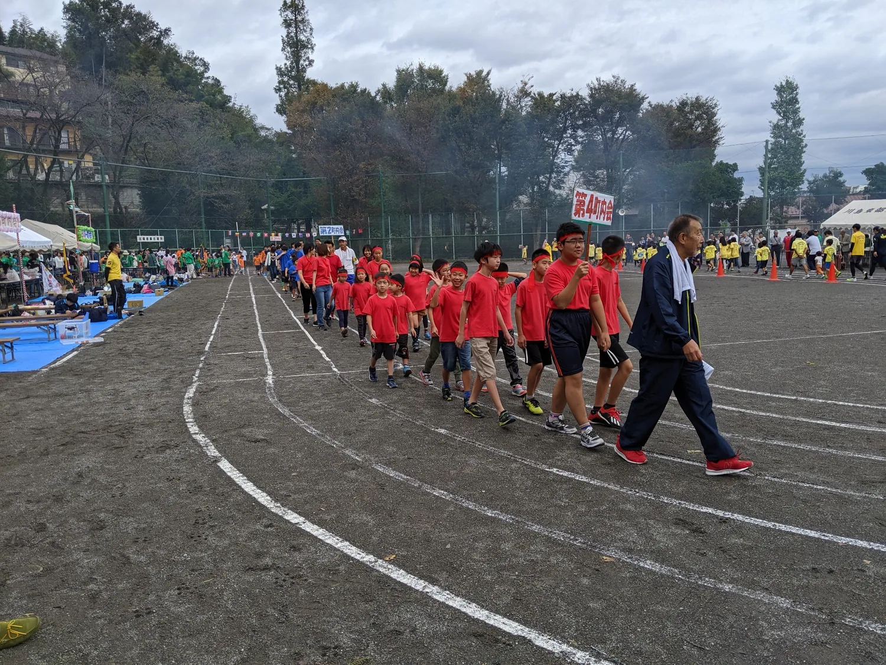
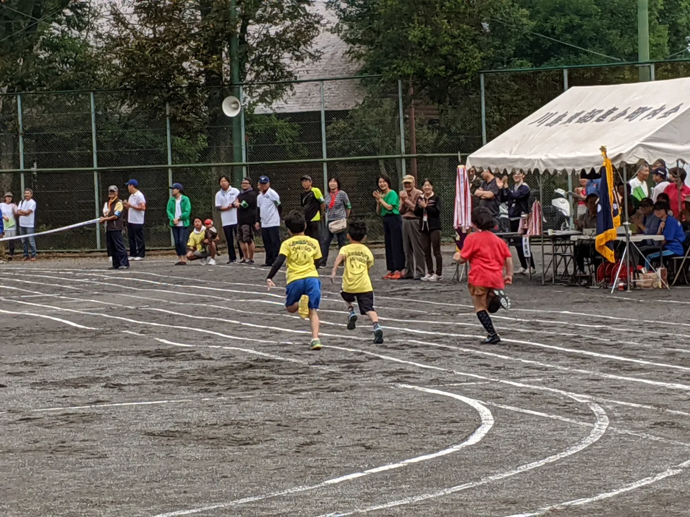
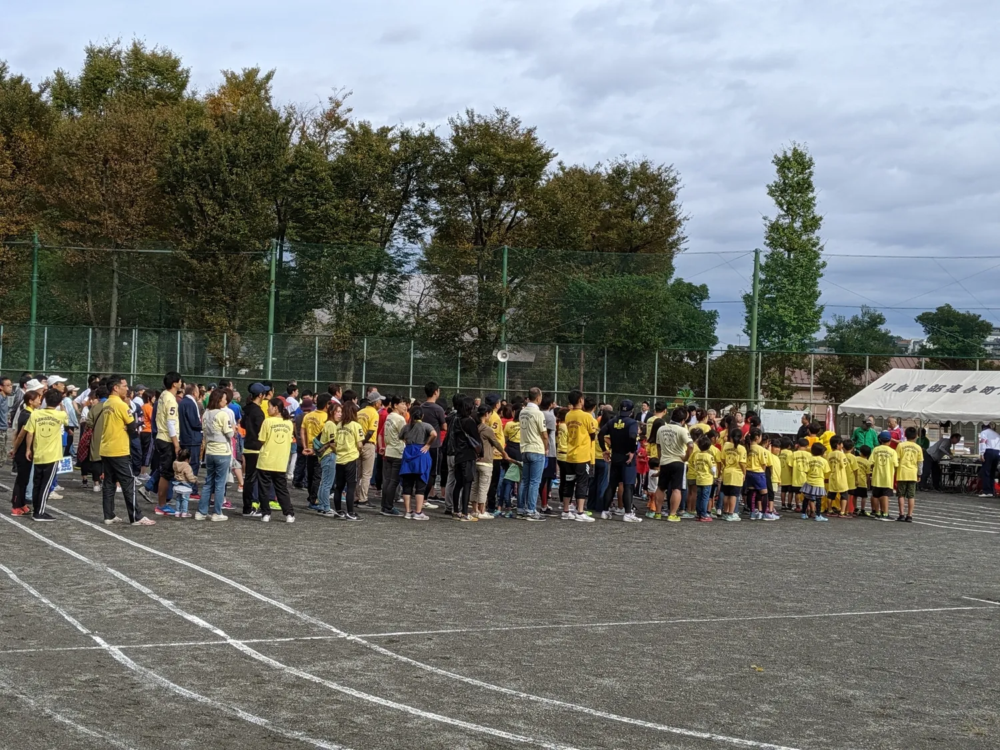
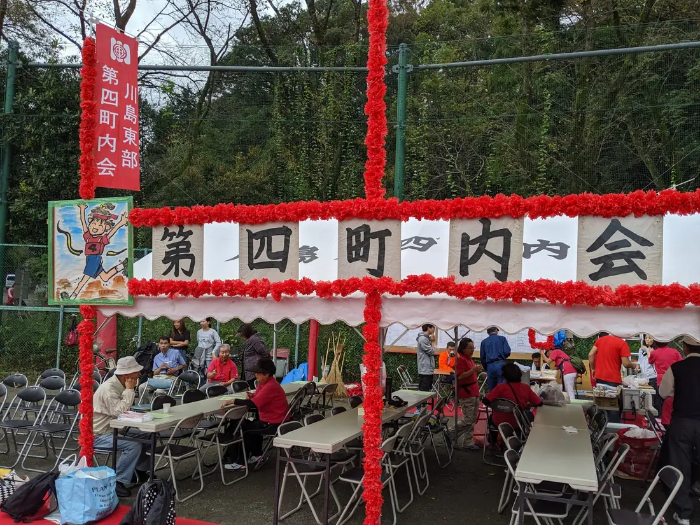
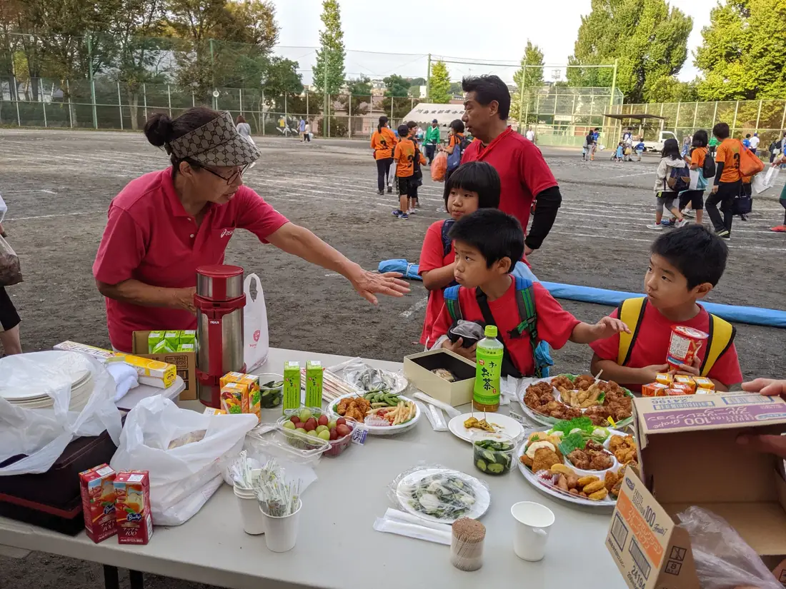

🏃 競技参加者募集中10/25（日）
10/25（日）
川島東部連合大運動会
地域の町内会が集まる連合大運動会が、10月25日（日）に開催されます。川島第四町内会では、競技に参加してくださる皆さんを募集します。応援だけでなく、ぜひ「第四」の選手として一緒に参加しませんか。
開催概要
開催日2026年10月25日（日）
会場川島町公園グラウンド
参加募集川島第四町内会から競技に参加する方を募集中
ENTRY
競技に出てみたい方、大募集！
「参加してみたい」「どの競技に出られるか知りたい」「家族で参加できるか聞いてみたい」など、競技参加に関する応募・お問い合わせを受け付けています。
競技内容や参加条件などの詳細は、町内会からの案内をご確認いただくか、フォームからお問い合わせください。
PAST PHOTOS
第四町内会の参加者がそろって入場。町内会みんなで参加する地域行事です。 競技中の様子。応援にも力が入ります。 会場には各町内会から多くの参加者が集まりました。 川島第四町内会のテント。競技の合間も地域の交流の場になります。 競技の合間のひととき。地域のみなさんで交流しました。
過去の連合運動会の様子
過去開催時（2019年）の写真です。第四町内会の皆さんが集まり、競技や応援を通じて地域で交流しました。今回もみんなで楽しい一日にしましょう。





※写真は2019年の開催時に撮影した過去の様子です。今回の競技内容・運営内容とは異なる場合があります。
10/25は、第四町内会で一緒に参加しましょう！
競技参加を希望される方は、下記フォームからご応募ください。ご質問・お問い合わせも同じフォームから受け付けています。